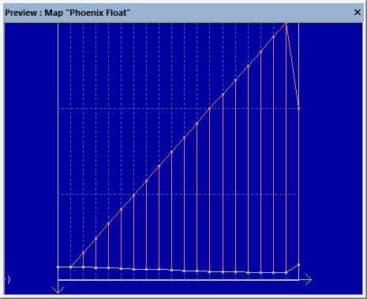
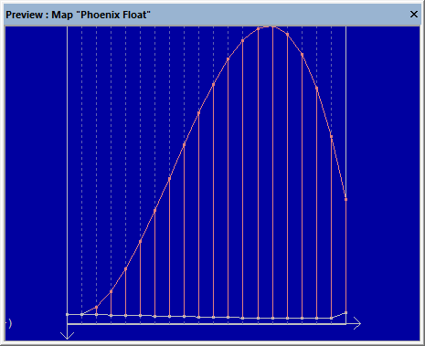

|
The Dialog Interpolate (Menu Edit) |

  
|
|
The Dialog Interpolate (Menu Edit) |
|
Use this command to replace the selected cells with an interpolation calculation of their neighbors. For this the selection needs to be rectangular (or one-dimensional) and there must be a border on each side that is not part of the selection, in order to have a base for the calculation. For cubic interpolation 2 unselected cells must exist on each side, but it creates "rounder" values and is better at continuing trends.
This function can also be used on axis data.
Extrapolation:
If a selection extends to the edge on one side, interpolation (except via the corner values) is not possible. However, if there are at least 2 cells outside the selection on the other side, WinOLS can (if you activate the option of the same name) extrapolate the values based on the 2 cells. (Interpolate=between the reference values; Extrapolate=outside the reference values)
Fallback strategy:
It can happen that the selected options (cubic or all 4 sides) are not possible with the current selection. WinOLS then automatically reduces the options so that interpolation/extrapolation is possible. A corresponding text in the dialog then indicates this.
If you have explicitly activated "only left/right" / "only top/bottom", this may mean that no calculation is possible because the selection is too close to the edge. Activate the checkbox "If necessary: All sides" to automatically switch to the other sides, if necessary.
Example:
In both images the outer 2 values on each side were left unchanged (they're the same in both images, the scale is different). All other values are interpolated.

linear

cubic
Shortcuts
Symbol bar:
Keyboard: I
Keyboard: Shift+I (Dialog will be skipped)